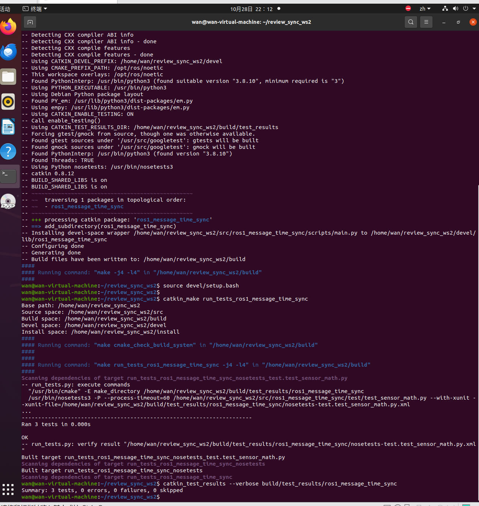
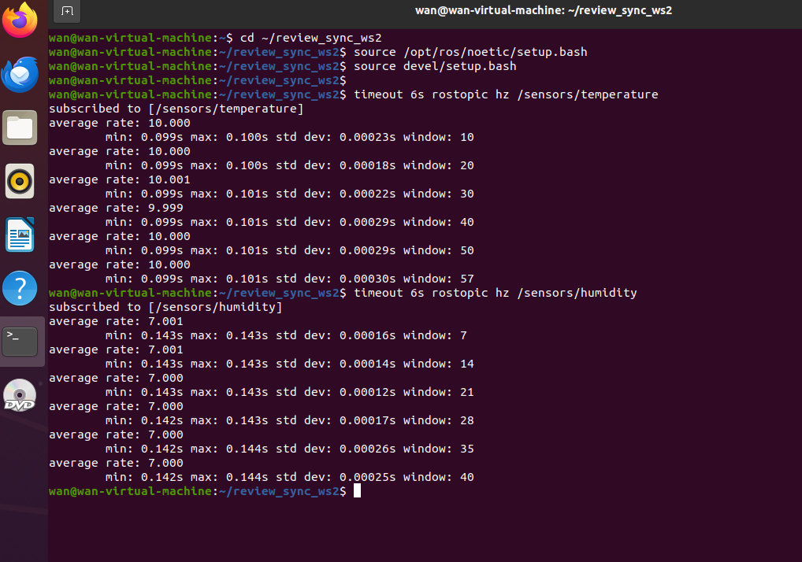
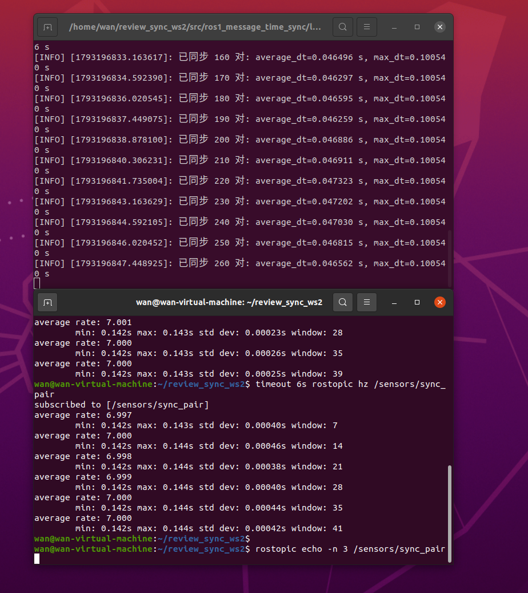

ROS Noetic 多传感器话题时间同步
本实验以不同频率生成模拟温度与湿度消息，使用
message_filters.ApproximateTimeSynchronizer 根据消息头时间戳进行近似同步。
同步成功的一对数据会重新发布到 /sensors/sync_pair。
源码位置：src/chap2/ros1_message_time_sync/
1. 实验目标
- 使用
sensor_msgs/Temperature和sensor_msgs/RelativeHumidity； - 为消息设置 ROS 时间戳；
- 比较不同频率话题的消息头时间戳；
- 使用近似时间同步器配对消息；
- 检查同步输出的时间差和频率。
2. 数据流
10 Hz 模拟温度 ─┐
├─ ApproximateTimeSynchronizer ─ /sensors/sync_pair
7 Hz 模拟湿度 ──┘
两路输入的时间戳不同，因此使用近似同步而不是要求时间完全相等。
3. 运行环境
| 项目 | 说明 |
|---|---|
| 操作系统 | Ubuntu 20.04 |
| ROS | ROS Noetic |
| Python | Python 3.8 |
| 依赖 | rospy、message_filters、sensor_msgs、std_msgs |
本实验不依赖 Gazebo、硬件传感器或外部数据。
4. 构建
mkdir -p ~/ros1_ws/src
cp -r <仓库路径>/src/chap2/ros1_message_time_sync ~/ros1_ws/src/
cd ~/ros1_ws
source /opt/ros/noetic/setup.bash
catkin_make
source devel/setup.bash
5. 启动
roslaunch ros1_message_time_sync main.launch
节点会同时创建两个发布器、两个 message_filters.Subscriber 和一个
ApproximateTimeSynchronizer。
6. 查看结果
新开终端：
source /opt/ros/noetic/setup.bash
source ~/ros1_ws/devel/setup.bash
rostopic hz /sensors/temperature
rostopic hz /sensors/humidity
rostopic hz /sensors/sync_pair
rostopic echo /sensors/sync_pair
默认发布频率分别为：
| 话题 | 频率 |
|---|---|
/sensors/temperature |
约 10 Hz |
/sensors/humidity |
约 7 Hz |
/sensors/sync_pair |
约 7 Hz |
同步消息示例：
data: "temperature_c=23.421 humidity_percent=51.536
timestamp_diff_sec=0.028000 temperature_seq=42 humidity_seq=30"
初始化终端每累计 10 对数据会打印一次平均时间差和最大时间差。
7. 参数调整
默认参数位于 config/params.yaml：
| 参数 | 默认值 | 说明 |
|---|---|---|
temperature_rate_hz |
10.0 |
温度发布频率 |
humidity_rate_hz |
7.0 |
湿度发布频率 |
sync_slop_sec |
0.14 |
允许的最大时间差 |
sync_queue_size |
30 |
同步队列长度 |
temperature_period_sec |
20.0 |
温度变化周期 |
humidity_period_sec |
30.0 |
湿度变化周期 |
减小 sync_slop_sec 会减少可配对的数据；将其增大到超过采样间隔时，
同步器更容易配对，但两路数据的时间一致性会变差。
8. 实测结果
测试环境：Ubuntu 20.04.6、ROS Noetic 1.17.4、Python 3.8.10。
构建和测试通过：
catkin_make成功；- 测试结果：3 tests，0 errors，0 failures，0 skipped。

三路话题的实测频率如下：
| 话题 | 实测频率 |
|---|---|
/sensors/temperature |
9.999–10.001 Hz |
/sensors/humidity |
7.000–7.001 Hz |
/sensors/sync_pair |
6.997–7.000 Hz |

节点启动后持续输出同步日志。累计到 260 对时，平均时间差为 0.0466 s，
最大时间差为 0.1005 s，均小于 sync_slop_sec=0.14 s：

三组同步消息如下：
temperature_c=23.453 humidity_percent=52.531 timestamp_diff_sec=0.057391
temperature_c=23.427 humidity_percent=52.609 timestamp_diff_sec=0.000153
temperature_c=23.411 humidity_percent=52.679 timestamp_diff_sec=0.043115
本实验使用程序生成的模拟数据，尚未使用真实温湿度传感器或 Gazebo。
9. 测试
cd ~/ros1_ws
source /opt/ros/noetic/setup.bash
source devel/setup.bash
catkin_make run_tests_ros1_message_time_sync
catkin_test_results build/test_results/ros1_message_time_sync
测试覆盖周期函数的基础值、峰值、谷值、有效范围和非正周期检查。
10. 常见问题
| 现象 | 原因 | 处理 |
|---|---|---|
找不到 message_filters |
未加载 Noetic 环境 | source /opt/ros/noetic/setup.bash |
/sensors/sync_pair 没有数据 |
sync_slop_sec 过小或队列过短 |
检查输入话题频率并适当增加参数 |
| 输入正常但配对频率低 | 两路数据时间差超过 slop | 根据采样周期调整 sync_slop_sec |
| 修改 YAML 后参数未生效 | 节点没有重启 | 重新执行 roslaunch |
11. 小结
多传感器消息只有在时间戳足够接近时才能组合使用。精确同步适合固定采样时钟，
ApproximateTimeSynchronizer 则适合本实验这种频率不同、时间戳不完全对齐的输入。